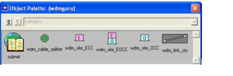
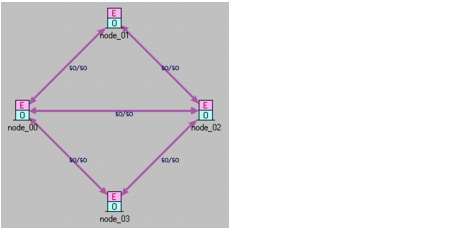
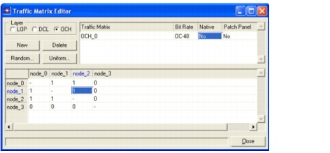
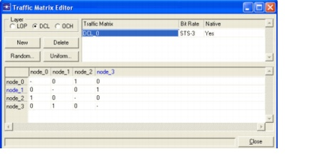
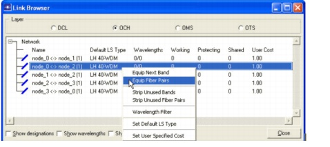
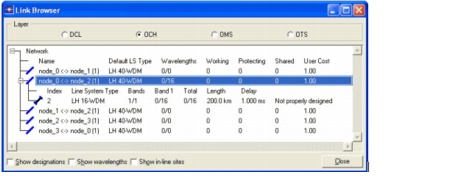

Introduction > Designing a Network Manually
Designing a Network Manually
The process of network modeling consists of specifying the information that describes all aspects of the network, such as
You can do modeling tasks manually within the user interface or by importing files that specify the network information (see Importing Network Elements).
Procedure 1-2 Creating a SP Guru Transport Planner Project Manually
- Create a new project.
- Select File > New....
The New dialog box appears.
- Choose OK.
- Enter Example2 as the project name (do not change the scenario name), and then press OK.
The Create a New Network dialog box appears.
- Choose SONET as the TDM nomenclature of the bit rates. SONET and SDH are the US and European standards used in today's transport networks.
- Select km as the distance unit and Logical in the View category. (In logical view, no background map is displayed.)
- Click OK.
- Add nodes.
- Press the button on the toolbar or choose Edit > Open Object Palette to open the Object Pallet. The Object Palette displays. From this window, you can add nodes (cable splitter, ECC, EOCC, or OCC) and links.

- Click on the wdm_site_EOCC icon. Drag it to the workspace and click on each of the places where you want to add sites. For this example, create four EOCC nodes (which will have as default names node_0 to node_3). Right-click or press Esc to stop adding sites.
- In the same way, create one node of the ECC type (node_4) and one of the OCC type (node_5).
- Inspect the different layers by using the OTS, OMS, OCH, and DCL buttons on the toolbar (do not close the Object Palette yet). All six nodes display in the OTS and OMS layer. All nodes also display in the OCH layer, but node_4 displays in gray. Because this node is an ECC (electrical cross-connect), it can only switch at the electrical level. In the DCL layer, node_5 is not shown, as it is an OCC (optical cross-connect). Such a node only supports switching at the optical level. The EOCC (electrical-optical cross-connect) nodes display in all layers. Switching at both the optical and electrical level is possible in these nodes.
- Press the OTS button on the toolbar. Remove node_4 and node_5 by left-clicking the nodes and and pressing the Delete button on the keyboard.
Note—The wdm_cable_spitter icon is used to add a cable splitter node. These nodes are only displayed in the OTS layer. The Subnet icon is used to add text fields to the canvas.
- Add OTS links.
- Click on the wdm_link icon in the object palette to add a link between two nodes.
- Click on the two nodes that you want to connect with a link. Create the following links:
- Right-click in the Project Editor workspace or press Esc to stop adding links. The nature of the link depends on the end nodes of the link. Links connecting OCC/OCC, OCC/EOCC and EOCC/EOCC node pairs are OCH links, on which WDM line systems are deployed. Links connecting ECC/ECC and ECC/EOCC node pairs are physical DCL links, on which SONET/ SDH line systems are deployed. Links between OCC/ECC node pairs are not allowed.

- Close the Object Palette.
- Create a traffic matrix.
- Select Network > Traffic Matrix Editor to open the dialog box for managing traffic matrices.
- Choose OCH and press New.
An empty traffic matrix labeled OCH_0 is created. The bit rate of the traffic matrix is OC-48 (2.5 Gb/s).
- Set the Native flag of the traffic matrix to No. If an OCH traffic demand is native, it supports optical traffic only, and no SONET/SDH traffic can ride on top of the wavelengths. In the opposite case, OCH demands are trailed to the client SONET/SDH layer, where they appear as links to support traffic in this layer.
- The Patch Panel flag of the traffic matrix is set to No. This implies that the traffic matrix is not hardwired (using the patch panel) in the nodes, but uses OXC (or IXC, OADM) ports instead.
- The matrix can be filled in manually by selecting an element of the matrix. Select the element node_01/node_1 and fill in 1. Do the same for the elements node_0/node_2 and node_1/node_2.
- The Random button is used to fill the matrix with randomized values. You can specify the range for the random values. The Uniform button sets all values of the traffic matrix to the specified value.
- As shown below, a traffic matrix was created with a bi-directional demand of 1 wavelength between node_0 and node_1, between node_0 and node_2 and between node_1 and node_2.

- Select DCL as the layer. Now you can create and manage traffic matrices with SONET demands.
- Press New.
An empty traffic matrix, DCL_0, is created.
The bit rate of the traffic matrix is STS-3 (i.e., 150 Mb/s). The traffic matrix is native implying it only supports SONET traffic and no LOP traffic.
- Fill in 1 as traffic demand between node_0 and node_2 and between node_1 and node_3.

- Close the Traffic Matrix Editor dialog box.
- Equip fiber pairs on the links.
- Open the link browser by selecting Network > Link Browser (or by double clicking on a link).
- Choose the OCH layer in this dialog box.
- Right-click on the link node_0 <-> node_2 and select Equip Fiber Pairs.

The Equip Fiber Pairs dialog box appears.
- Select the WDM line system type to use in lighting the fiber. For example, pick LH 16-WDM. Press Equip. This action lights a fiber pair of the LH 16-WDM type on the selected OCH link.
- Click on the + icon next on the link node_0 <-> node_2. The lit fiber pairs on the link appear.

- Close the link browser.
- Save the project.
- Select File > Close to close the project.
End of Procedure 1-2
| Home © 1987-2007 OPNET Technologies, Inc. All Rights Reserved. This software may be covered by one or more U.S. Patents. See complete patent notice in the Legal Notices section. OPNET Support Center |